Example anim01 below demonstrates each of SVG's five animation elements.
]]>
| 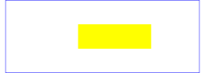 At zero seconds | 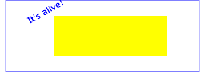 At three seconds | |
| 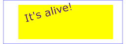 At six seconds |  At nine seconds At nine seconds |
| SVG 2 Requirements: |
|
|---|---|
| Resolutions: |
|
| Purpose: | General improvements to the animation features of SVG 2. |
| Owner: | Brian (no action) |
| Note: | These will be addressed in the separate Web Animations specification, which SVG 2 will eventually reference. |
Because the Web is a dynamic medium, SVG supports the ability to change vector graphics over time. SVG content can be animated in the following ways:
SVG's animation elements were developed in collaboration with the W3C Synchronized Multimedia (SYMM) Working Group, developers of the Synchronized Multimedia Integration Language (SMIL) 3.0 Specification [SMIL].
The SYMM Working Group, in collaboration with the SVG Working Group, has authored the SMIL Animation specification [SMILANIM], which represents a general-purpose XML animation feature set. SVG incorporates the animation features defined in the SMIL Animation specification and provides some SVG-specific extensions.
For an introduction to the approach and features available in any language that supports SMIL Animation, see SMIL Animation overview and SMIL Animation animation model ([SMILANIM], sections 2 and 3). For the list of animation features which go beyond SMIL Animation, see SVG extensions to SMIL Animation.
SVG is a host language in terms of SMIL Animation and therefore introduces additional constraints and features as permitted by that specification. Except for any SVG-specific rules explicitly mentioned in this specification, the normative definition for SVG's animation elements and attributes is the SMIL Animation specification [SMILANIM].
SVG supports the following four animation elements which are defined in the SMIL Animation specification:
| 'animate' | allows scalar attributes and properties to be assigned different values over time |
| 'set' | a convenient shorthand for 'animate', which is useful for assigning animation values to non-numeric attributes and properties, such as the 'visibility' property |
| 'animateMotion' | moves an element along a motion path |
| 'animateColor' | modifies the color value of particular attributes or properties over time |
Although SVG defines 'animateColor', its use is deprecated in favor of simply using the 'animate' element to target properties that can take color values.
Additionally, SVG includes the following compatible extensions to SMIL Animation:
| 'animateTransform' | modifies one of SVG's transformation attributes over time, such as the 'transform' attribute |
| 'animateMotion/path' attribute | SVG allows any feature from SVG's path data syntax to be specified in a 'animateMotion/path' attribute to the 'animateMotion' element (SMIL Animation only allows a subset of SVG's path data syntax within a 'animateMotion/path' attribute) |
| 'mpath' element | SVG allows an 'animateMotion' element to contain a child 'mpath' element which references an SVG 'path' element as the definition of the motion path |
| 'animateMotion/keyPoints' attribute | SVG adds a 'animateMotion/keyPoints' attribute to the 'animateMotion' to provide precise control of the velocity of motion path animations |
| 'animateMotion/rotate' attribute | SVG adds a 'animateMotion/rotate' attribute to the 'animateMotion' to control whether an object is automatically rotated so that its x-axis points in the same direction (or opposite direction) as the directional tangent vector of the motion path |
The description of 'animateTransform' above should reference the 'transform' property.
For compatibility with other aspects of the language, SVG uses IRI references via an 'set/xlink:href' attribute to identify the elements which are to be targets of the animations, as allowed in SMIL 3.0.
SMIL Animation requires that the host language define the meaning for document begin and the document end. Since an 'svg' is sometimes the root of the XML document tree and other times can be a component of a parent XML grammar, the document begin for a given SVG document fragment is defined to be the exact time at which the 'svg' element's load event is triggered. The document end of an SVG document fragment is the point at which the document fragment has been released and is no longer being processed by the user agent. However, nested 'svg' elements within an SVG document do not constitute document fragments in this sense, and do not define a separate document begin; all times within the nested SVG fragment are relative to the document time defined for the root 'svg' element.
For SVG, the term presentation time indicates the position in the timeline relative to the document begin of a given document fragment.
SVG defines more constrained error processing than is defined in the SMIL Animation specification [SMILANIM]. SMIL Animation defines error processing behavior where the document continues to run in certain error situations, whereas all animations within an SVG document fragment will stop in the event of any error within the document (see Error processing).
Example anim01 below demonstrates each of SVG's five animation elements.
]]>
| 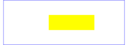 At zero seconds | 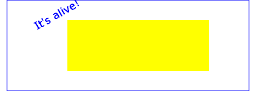 At three seconds | |
| 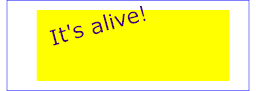 At six seconds | At nine seconds |
The sections below describe the various animation attributes and elements.
The following attribute is common to all animation elements and identifies the target element for the animation.
Attribute definitions:
| Name | Value | Lacuna value | Animatable |
|---|---|---|---|
| xlink:href | <iri> | (none) | no |
An IRI reference to the element which is the target of this animation and which therefore will be modified over time.
The target element must be part of the current SVG document fragment.
<iri> must point to exactly one target element which is capable of being the target of the given animation. If <iri> points to multiple target elements, if the given target element is not capable of being a target of the given animation, or if the given target element is not part of the current SVG document fragment, then the document is in error (see Error processing).
If the 'xlink:href' attribute is not provided, then the target element will be the immediate parent element of the current animation element.
Refer to the descriptions of the individual animation elements for any restrictions on what types of elements can be targets of particular types of animations.
Except for any SVG-specific rules explicitly mentioned in this specification, the normative definition for this attribute is the SMIL Animation specification. In particular, see SMIL Animation: Specifying the animation target ([SMILANIM], section 3.1).
The following attributes are the animation attribute target attributes, which identify the target attribute or property for the given target element whose value changes over time.
Attribute definitions:
| Name | Value | Lacuna value | Animatable |
|---|---|---|---|
| attributeName | <XML-Name> | (none) | no |
Specifies the name of the target attribute. An XMLNS prefix may be used to indicate the XML namespace for the attribute. The prefix will be interpreted in the scope of the current (i.e., the referencing) animation element.
Except for any SVG-specific rules explicitly mentioned in this specification, the normative definition for this attribute is the SMIL Animation specification. In particular, see SMIL Animation: Specifying the animation target ([SMILANIM], section 3.1).
| Name | Value | Lacuna value | Animatable |
|---|---|---|---|
| attributeType | CSS | XML | auto | auto | no |
Specifies the namespace in which the target attribute and its associated values are defined. The attribute value is one of the following (values are case-sensitive):
Except for any SVG-specific rules explicitly mentioned in this specification, the normative definition for this attribute is the SMIL Animation specification. In particular, see SMIL Animation: Specifying the animation target ([SMILANIM], section 3.1).
Example animns01 below shows a namespace prefix being resolved to a namespace name in the scope of the referencing element, and that namespace name being used (regardless of the prefix which happens to be used in the target scope) to identify the attribute being animated.
Paced animations assume a notion of distance between the various animation values defined by the 'to', 'from', 'by' and 'values' attributes. Distance is defined only for scalar types (such as <length>), colors and the subset of transformation types that are supported by 'animateTransform'. In the list of distance functions below, Va and Vb represent the two values the distance between which is being calculated.
Since paced animation is intended to produce an animation with an even pace of change, it does not make sense to define distance functions for all data types. Distance can be usefully defined for types whose values are n-dimensional vectors (including scalars, which are 1-dimensional vectors). For example, a <length> value is a scalar value, and a <color> value is a 3-dimensional vector. Thus attributes of these types can have paced animation applied to them. On the other hand, a <list-of-length> (as used by 'stroke-dasharray') is a list of scalars (1-dimensional vectors), and <list-of-points> (as used by the 'points' attribute on a 'polygon') is a list of 2-dimensional vectors. Therefore, these types do not have a distance function defined and cannot have paced animation applied to them.
The distance functions for types that support paced animation are as follows:
distance(Va, Vb) = |Va − Vb|
Examples: animating the 'rect/x' attribute on a 'rect', or the 'stroke-width' property on a 'circle'.
distance(Va, Vb) = sqrt((Va.red − Vb.red)2 + (Va.green − Vb.green)2 + (Va.blue − Vb.blue)2), where:
Each of the color component values is usually in the range [0, 1], where 0 represents none of that color component, and 1 represents the maximum amount of that color component, in the sRGB gamut [SRGB]. Since <color> values may specify colors outside of the sRGB gamut, these component values may lie outside the range [0, 1].
Example: animating the 'fill property' property on an 'ellipse'.
distance(Va, Vb) = sqrt((Va.tx − Vb.tx)2 + (Va.ty − Vb.ty)2), where:
Example (for all transform definition types): animating the 'transform' attribute on a 'g' using 'animateTransform'.
distance(Va, Vb) = sqrt((Va.sx − Vb.sx)2 + (Va.sy − Vb.sy)2), where:
Note that, as when specifying scale transformations in a <transform-list>, if the y component of the scale is omitted it is implicitly equal to the x component.
distance(Va, Vb) = sqrt((Va.angle − Vb.angle)2), where:
Since the distance function for rotations is not in terms of the rotation center point components, a paced animation that changes the rotation center point may not appear to have a paced movement when the animation is applied.
Distance functions for all other data types are not defined. If calcMode="paced" is used on an animation of an attribute or property whose type is not one of those listed above, the animation effect is undefined. SVG user agents may choose to perform the animation as if calcMode="linear", but this is not required. Authors are recommended not to specify paced animation on types not listed above.
The following attributes are the animation timing attributes. They are common to all animation elements and control the timing of the animation, including what causes the animation to start and end, whether the animation runs repeatedly, and whether to retain the end state the animation once the animation ends.
In the syntax specifications that follow, optional white space is indicated as "S", defined as follows:
S ::= (#x20 | #x9 | #xD | #xA)*
Attribute definitions:
| Name | Value | Lacuna value | Animatable |
|---|---|---|---|
| begin | begin-value-list | 0s | no |
Defines when the element should begin (i.e. become active).
The attribute value is a semicolon separated list of values.
begin or end to
identify whether to synchronize with the beginning or
active end of the referenced animation element.The begin of the animation will be determined by a "beginElement()" method call or a hyperlink targeted to the element.
The animation DOM methods are described in DOM interfaces.
Hyperlink-based timing is described in SMIL Animation: Hyperlinks and timing.
Except for any SVG-specific rules explicitly mentioned in this specification, the normative definition for this attribute is the SMIL Animation specification. In particular, see SMIL Animation: 'begin' attribute ([SMILANIM], section 3.2.1).
| Name | Value | Lacuna value | Animatable |
|---|---|---|---|
| dur | Clock-value | "media" | "indefinite" | indefinite | no |
Specifies the simple duration.
The attribute value can be one of the following:
If the animation does not have a 'dur' attribute, the simple duration is indefinite. Note that interpolation will not work if the simple duration is indefinite (although this may still be useful for 'set' elements). Except for any SVG-specific rules explicitly mentioned in this specification, the normative definition for this attribute is the SMIL Animation specification. In particular, see SMIL Animation: 'dur' attribute ([SMILANIM], section 3.2.1).
| Name | Value | Lacuna value | Animatable |
|---|---|---|---|
| end | end-value-list | (none) | no |
Defines an end value for the animation that can constrain the active duration. The attribute value is a semicolon separated list of values.
A value of 'indefinite' specifies that the end of the animation will be determined by an SVGAnimationElement::endElement method call (the animation DOM methods are described in DOM interfaces).
Except for any SVG-specific rules explicitly mentioned in this specification, the normative definition for this attribute is the SMIL Animation specification. In particular, see SMIL Animation: 'end' attribute ([SMILANIM], section 3.3.2).
| Name | Value | Lacuna value | Animatable |
|---|---|---|---|
| min | Clock-value | "media" | 0s | no |
| max | Clock-value | "media" | (none) | no |
The 'min' and 'max' attributes specify the minimum and maximum value of the active duration, respectively.
The attribute values can be either of the following:
Specifies the length of the minimum or maximum value of the active duration, measured in local time.
Value must be greater than 0.
The lacuna value for 'min' is '0' and there is no lacuna value for 'max'. In both cases, this does not constrain the active duration at all.
Except for any SVG-specific rules explicitly mentioned in this specification, the normative definition for these attributes is the SMIL Animation specification. In particular, see SMIL Animation: The min and max attributes ([SMILANIM], section 3.3.3).
| Name | Value | Lacuna value | Animatable |
|---|---|---|---|
| restart | always | whenNotActive | never | always | no |
Except for any SVG-specific rules explicitly mentioned in this specification, the normative definition for this attribute is the SMIL Animation specification. In particular, see SMIL Animation: 'restart' attribute ([SMILANIM], section 3.3.7).
| Name | Value | Lacuna value | Animatable |
|---|---|---|---|
| repeatCount | <number> | indefinite | (none) | no |
Specifies the number of iterations of the animation function. It can have the following attribute values:
Except for any SVG-specific rules explicitly mentioned in this specification, the normative definition for this attribute is the SMIL Animation specification. In particular, see SMIL Animation: 'repeatCount' attribute ([SMILANIM], section 3.3.1).
| Name | Value | Lacuna value | Animatable |
|---|---|---|---|
| repeatDur | Clock-value | "indefinite" | (none) | no |
Specifies the total duration for repeat. It can have the following attribute values:
f(t).Except for any SVG-specific rules explicitly mentioned in this specification, the normative definition for this attribute is the SMIL Animation specification. In particular, see SMIL Animation: 'repeatDur' attribute ([SMILANIM], section 3.3.1).
| Name | Value | Lacuna value | Animatable |
|---|---|---|---|
| fill | freeze | remove | remove | no |
This attribute can have the following values:
The animation effect is removed (no longer applied) when the active duration of the animation is over. After the active end of the animation, the animation no longer affects the target (unless the animation is restarted - see SMIL Animation: Restarting animation).
Except for any SVG-specific rules explicitly mentioned in this specification, the normative definition for this attribute is the SMIL Animation specification. In particular, see SMIL Animation: 'fill' attribute ([SMILANIM], section 3.3.5).
The SMIL Animation specification [SMILANIM] defines the detailed processing rules associated with the above attributes. Except for any SVG-specific rules explicitly mentioned in this specification, the SMIL Animation specification is the normative definition of the processing rules for the above attributes.
Clock values have the same syntax as in SMIL Animation specification [SMILANIM]. The grammar for clock values is repeated here:
Clock-val ::= Full-clock-val | Partial-clock-val
| Timecount-val
Full-clock-val ::= Hours ":" Minutes ":" Seconds ("." Fraction)?
Partial-clock-val ::= Minutes ":" Seconds ("." Fraction)?
Timecount-val ::= Timecount ("." Fraction)? (Metric)?
Metric ::= "h" | "min" | "s" | "ms"
Hours ::= DIGIT+; any positive number
Minutes ::= 2DIGIT; range from 00 to 59
Seconds ::= 2DIGIT; range from 00 to 59
Fraction ::= DIGIT+
Timecount ::= DIGIT+
2DIGIT ::= DIGIT DIGIT
DIGIT ::= [0-9]
For Timecount values, the default metric suffix is "s" (for seconds). No embedded white space is allowed in clock values, although leading and trailing white space characters will be ignored.
Clock values describe presentation time.
The following are examples of legal clock values:
02:30:03 50:00:10.25 = 50 hours, 10 seconds and 250 milliseconds
02:33 00:10.5 = 10.5 seconds = 10 seconds and 500 milliseconds 3.2h = 3.2 hours = 3 hours and 12 minutes 45min = 45 minutes 30s = 30 seconds 5ms = 5 milliseconds 12.467 = 12 seconds and 467 millisecondsFractional values are just (base 10) floating point definitions of seconds. Thus:
00.5s = 500 milliseconds
00:00.005 = 5 milliseconds
The following attributes are the animation value attributes.
They are common to elements
Attribute definitions:
| Name | Value | Lacuna value | Animatable |
|---|---|---|---|
| calcMode | discrete | linear | paced | spline | (none) | no |
Specifies the interpolation mode for the animation. This can take any of the following values. The default mode is 'linear', however if the attribute does not support linear interpolation (e.g. for strings), the 'calcMode' attribute is ignored and discrete interpolation is used.
Except for any SVG-specific rules explicitly mentioned in this specification, the normative definition for this attribute is the SMIL Animation specification. In particular, see SMIL Animation: 'calcMode' attribute ([SMILANIM], section 3.2.3).
| Name | Value | Lacuna value | Animatable |
|---|---|---|---|
| values | <list> | (none) | no |
A semicolon-separated list of one or more values. Vector-valued attributes are supported using the vector syntax of the 'attributeType' domain. Per the SMIL specification, leading and trailing white space, and white space before and after semicolon separators, is allowed and will be ignored. Except for any SVG-specific rules explicitly mentioned in this specification, the normative definition for this attribute is the SMIL Animation specification. In particular, see SMIL Animation: 'values' attribute ([SMILANIM], section 3.2.2).
| Name | Value | Lacuna value | Animatable |
|---|---|---|---|
| keyTimes | <list> | (none) | no |
A semicolon-separated list of time values used to control the pacing of the animation. Each time in the list corresponds to a value in the 'values' attribute list, and defines when the value is used in the animation function. Each time value in the 'keyTimes' list is specified as a floating point value between 0 and 1 (inclusive), representing a proportional offset into the simple duration of the animation element.
For animations specified with a 'values' list, the 'keyTimes' attribute if specified must have exactly as many values as there are in the 'values' attribute. For from/to/by animations, the 'keyTimes' attribute if specified must have two values.
Each successive time value must be greater than or equal to the preceding time value.
The 'keyTimes' list semantics depends upon the interpolation mode:
If the interpolation mode is 'paced', the 'keyTimes' attribute is ignored.
If there are any errors in the 'keyTimes' specification (bad values, too many or too few values), the document fragment is in error (see error processing).
If the simple duration is indefinite, any 'keyTimes' specification will be ignored.
Because paced animation interpolation is unspecified for some value types, authors are encouraged to use 'linear' animation interpolation with calculated 'keyTimes' to achieve particular interpolation behavior for these types.
Except for any SVG-specific rules explicitly mentioned in this specification, the normative definition for this attribute is the SMIL Animation specification. In particular, see SMIL Animation: 'keyTimes' attribute ([SMILANIM], section 3.2.3).
| Name | Value | Lacuna value | Animatable |
|---|---|---|---|
| keySplines | <list> | (none) | no |
A set of Bézier control points associated with
the 'keyTimes' list, defining a cubic
Bézier function that controls interval pacing. The
attribute value is a semicolon-separated list of control
point descriptions. Each control point description is a set
of four values: x1 y1 x2 y2, describing the
Bézier control points for one time segment. Note:
SMIL
allows these values to be separated either by commas with
optional whitespace, or by whitespace alone. The
'keyTimes' values that define the associated
segment are the Bézier "anchor points", and the
'keySplines' values are the control points.
Thus, there must be one fewer sets of control points than
there are 'keyTimes'.
The values must all be in the range 0 to 1.
This attribute is ignored unless the 'calcMode' is set to 'spline'.
If there are any errors in the 'keySplines' specification (bad values, too many or too few values), the document fragment is in error (see error processing).
Except for any SVG-specific rules explicitly mentioned in this specification, the normative definition for this attribute is the SMIL Animation specification. In particular, see SMIL Animation: 'keySplines' attribute ([SMILANIM], section 3.2.3).
| Name | Value | Lacuna value | Animatable |
|---|---|---|---|
| from, to, by | <value> | (none) | no |
The 'from' and 'to' attributes specify the starting and ending value of the animation, while the 'by' attribute specifies a relative offset value for the animation.
Except for any SVG-specific rules explicitly mentioned in this specification, the normative definition for these attributes is the SMIL Animation specification. In particular, see SMIL Animation: Animation function values ([SMILANIM], section 3.2.2).
The SMIL Animation specification [SMILANIM] defines the detailed processing rules associated with the above attributes. Except for any SVG-specific rules explicitly mentioned in this specification, the SMIL Animation specification is the normative definition of the processing rules for the above attributes.
The animation values specified in the animation element must be legal values for the specified attribute. Leading and trailing white space, and white space before and after semicolon separators, will be ignored.
All values specified must be legal values for the specified attribute (as defined in the associated namespace). If any values are not legal, the document fragment is in error (see error processing).
If a list of values is used, the animation will apply the values in order over the course of the animation. If a list of 'values' is specified, any 'from', 'to' and 'by' attribute values are ignored.
The processing rules for the variants of from/by/to animations are described in Animation function values with the following exception.
In order to provide behavior that is intuitive and consistent between discrete animations with an explicitly specified 'from' attribute (e.g. "from-to animation") and those where the underlying value is used (e.g. "to animation"), the behavior of discrete to-animation in SVG deviates from the definition in SMIL Animation. As with a discrete from-to animation, a discrete to animation will set the underlying value for the first half of the simple duration (or, if a 'keyTimes' list is provided, until the simple duration specified by the second value in the 'keyTimes' list) and the 'to' value for the remainder of the simple duration.
The following figure illustrates the interpretation of the 'keySplines' attribute. Each diagram illustrates the effect of 'keySplines' settings for a single interval (i.e. between the associated pairs of values in the 'keyTimes' and 'values' lists.). The horizontal axis can be thought of as the input value for the unit progress of interpolation within the interval - i.e. the pace with which interpolation proceeds along the given interval. The vertical axis is the resulting value for the unit progress, yielded by the function that the 'keySplines' attribute defines. Another way of describing this is that the horizontal axis is the input unit time for the interval, and the vertical axis is the output unit time. See also the section Timing and real-world clock times.
| 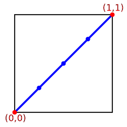 keySplines="0 0 1 1" (the default) | 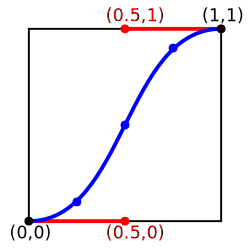 keySplines=".5 0 .5 1" |
| 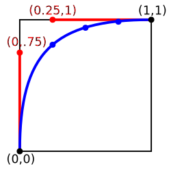 keySplines="0 .75 .25 1" | 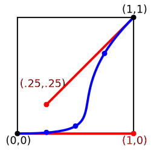keySplines="1 0 .25 .25" |
To illustrate the calculations, consider the simple example:
<animate dur="4s" values="10; 20" keyTimes="0; 1"
calcMode="spline" keySplines={as in table} />
Using the 'keySplines' values for each of the four cases above, the approximate interpolated values as the animation proceeds are:
| Value of 'keySplines' | Initial value | After 1s | After 2s | After 3s | Final value |
|---|---|---|---|---|---|
| 0 0 1 1 | 10.0 | 12.5 | 15.0 | 17.5 | 20.0 |
| .5 0 .5 1 | 10.0 | 11.0 | 15.0 | 19.0 | 20.0 |
| 0 .75 .25 1 | 10.0 | 18.0 | 19.3 | 19.8 | 20.0 |
| 1 0 .25 .25 | 10.0 | 10.1 | 10.6 | 16.9 | 20.0 |
For a formal definition of Bézier spline calculation, see [FOLEY-VANDAM], pp. 488-491.
It is frequently useful to define animation as an offset or delta to an attribute's value, rather than as absolute values.
A simple "grow" animation can increase the width of an object by 10 pixels:
]]>
It is frequently useful for repeated animations to build upon the previous results, accumulating with each iteration.
The following example causes the rectangle to continue to grow with each repeat of the animation:
]]>
At the end of the first repetition, the rectangle has a width of 30 pixels. At the end of the second repetition, the rectangle has a width of 40 pixels. At the end of the fifth repetition, the rectangle has a width of 70 pixels.
For more information about additive animations, see SMIL Animation: Additive animation. For more information on cumulative animations, see SMIL Animation: Controlling behavior of repeating animation - Cumulative animation.
The following attributes are the animation addition attributes,
which are common to elements
Attribute definitions:
| Name | Value | Lacuna value | Animatable |
|---|---|---|---|
| additive | replace | sum | replace | no |
Controls whether or not the animation is additive.
Except for any SVG-specific rules explicitly mentioned in this specification, the normative definition for this attribute is the SMIL Animation specification. In particular, see SMIL Animation: 'additive' attribute ([SMILANIM], section 3.3.6).
| Name | Value | Lacuna value | Animatable |
|---|---|---|---|
| accumulate | none | sum | none | no |
Controls whether or not the animation is cumulative.
This attribute is ignored if the target attribute value does not support addition, or if the animation element does not repeat.
Cumulative animation is not defined for "to animation".
This attribute will be ignored if the animation function is specified with only the 'to' attribute.
Except for any SVG-specific rules explicitly mentioned in this specification, the normative definition for this attribute is the SMIL Animation specification. In particular, see SMIL Animation: 'accumulate' attribute ([SMILANIM], section 3.3.1).
SVG allows both attributes and properties to be animated. If a given attribute or property is inheritable by descendants, then animations on a parent element such as a 'g' element has the effect of propagating the attribute or property animation values to descendant elements as the animation proceeds; thus, descendant elements can inherit animated attributes and properties from their ancestors.
The 'animate' element is used to animate a single attribute or property over time.
This example makes a rectangle repeatedly fade away over 5 seconds:
]]>
Except for any SVG-specific rules explicitly mentioned in this specification, the normative definition for this element is the SMIL Animation specification. In particular, see SMIL Animation: 'animate' element ([SMILANIM], section 4.1).
The 'color-interpolation' property applies to color interpolations that result from animations using the 'animate' element.
For a list of attributes and properties that can be animated using the 'animate' element, see Elements, attributes and properties that can be animated.
The 'set' element provides a simple means of just setting the value of an attribute for a specified duration. It supports all attribute types, including those that cannot reasonably be interpolated, such as string and boolean values. The 'set' element is non-additive. The additive and accumulate attributes are not allowed, and will be ignored if specified.
Except for any SVG-specific rules explicitly mentioned in this specification, the normative definition for this element is the SMIL Animation specification. In particular, see SMIL Animation: 'set' element ([SMILANIM], section 4.2).
Attribute definitions:
| Name | Value | Lacuna value | Animatable |
|---|---|---|---|
| to | <value> | (none) | no |
For a list of attributes and properties that can be animated using the 'set' element, see Elements, attributes and properties that can be animated.
The 'animateMotion' element causes a referenced element to move along a motion path.
Except for any SVG-specific rules explicitly mentioned in this specification, the normative definition for this element is the SMIL Animation specification. In particular, see SMIL Animation: 'animateMotion' element ([SMILANIM], section 4.3).
Attribute definitions:
| Name | Value | Lacuna value | Animatable |
|---|---|---|---|
| calcMode | discrete | linear | paced | spline | paced | no |
Specifies the interpolation mode for the animation. Refer to general description of the 'animate/calcMode' attribute above. The only difference is that the default value for the 'calcMode' for 'animateMotion' is 'paced'. See SMIL Animation: 'calcMode' attribute for 'animateMotion'.
| Name | Value | Lacuna value | Animatable |
|---|---|---|---|
| path | <path-data> | (none) | no |
The motion path, expressed in the same format and interpreted the same way as the 'path/d' attribute on the 'path element' element. The effect of a motion path animation is to add a supplemental transformation matrix onto the CTM for the referenced object which causes a translation along the x- and y-axes of the current user coordinate system by the computed X and Y values computed over time.
| Name | Value | Lacuna value | Animatable |
|---|---|---|---|
| keyPoints | <list-of-numbers> | (none) | no |
'keyPoints' takes a semicolon-separated list of floating point values between 0 and 1 and indicates how far along the motion path the object shall move at the moment in time specified by corresponding 'keyTimes' value. Distance calculations use the user agent's distance along the path algorithm. Each progress value in the list corresponds to a value in the 'keyTimes' attribute list.
If a list of 'keyPoints' is specified, there must be exactly as many values in the 'keyPoints' list as in the 'keyTimes' list.
If there are any errors in the 'keyPoints' specification (bad values, too many or too few values), then the document is in error (see Error processing).
| Name | Value | Lacuna value | Animatable |
|---|---|---|---|
| rotate | <number> | auto | auto-reverse | 0 | no |
The 'rotate' attribute post-multiplies a supplemental transformation matrix onto the CTM of the target element to apply a rotation transformation about the origin of the current user coordinate system. The rotation transformation is applied after the supplemental translation transformation that is computed due to the 'path attribute' attribute.
| Name | Value | Lacuna value | Animatable |
|---|---|---|---|
| origin | default | default | no |
The 'origin' attribute is defined in the SMIL Animation specification ([SMILANIM], section 4.3). It has no effect in SVG.
Attribute definitions:
| Name | Value | Lacuna value | Animatable |
|---|---|---|---|
| xlink:href | <iri> | (none) | no |
An IRI reference to the 'path element' element which defines the motion path.
For 'animateMotion', the specified values for 'from', 'by', 'to' and 'values' consists of x, y coordinate pairs, with a single comma and/or white space separating the x coordinate from the y coordinate. For example, from="33,15" specifies an x coordinate value of 33 and a y coordinate value of 15.
If provided, the 'values' attribute must consists of a list of x, y coordinate pairs. Coordinate values are separated by at least one white space character or a comma. Additional white space around the separator is allowed. For example, values="10,20;30,20;30,40" or values="10mm,20mm;30mm,20mm;30mm,40mm". Each coordinate represents a length. Attributes 'from', 'by', 'to' and 'values' specify a shape on the current canvas which represents the motion path.
Two options are available which allow definition of a motion path using any of SVG's path data commands:
Note that SVG's path data commands can only contain values in user space, whereas 'from', 'by', 'to' and 'values' can specify coordinates in user space or using unit identifiers. See Units.
The various (x,y) points of the shape provide a supplemental transformation matrix onto the CTM for the referenced object which causes a translation along the x- and y-axes of the current user coordinate system by the (x,y) values of the shape computed over time. Thus, the referenced object is translated over time by the offset of the motion path relative to the origin of the current user coordinate system. The supplemental transformation is applied on top of any transformations due to the target element's 'transform' property or any animations on that attribute due to 'animateTransform' elements on the target element.
The 'additive' and 'accumulate' attributes apply to 'animateMotion' elements. Multiple 'animateMotion' elements all simultaneously referencing the same target element can be additive with respect to each other; however, the transformations which result from the 'animateMotion' elements are always supplemental to any transformations due to the target element's 'transform' property or any 'animateTransform' elements.
The default calculation mode ('calcMode') for 'animateMotion' is "paced". This will produce constant velocity motion along the specified path. Note that while animateMotion elements can be additive, it is important to observe that the addition of two or more "paced" (constant velocity) animations might not result in a combined motion animation with constant velocity.
When a path is combined with "discrete", "linear" or "spline" 'calcMode' settings, and if attribute 'keyPoints' is not provided, the number of values is defined to be the number of points defined by the path, unless there are "move to" commands within the path. A "move to" command within the path (i.e. other than at the beginning of the path description) A "move to" command does not count as an additional point when dividing up the duration, or when associating 'keyTimes', 'keySplines' and 'keyPoints' values. When a path is combined with a "paced" 'calcMode' setting, all "move to" commands are considered to have 0 length (i.e. they always happen instantaneously), and is not considered in computing the pacing.
For more flexibility in controlling the velocity along the motion path, the 'keyPoints' attribute provides the ability to specify the progress along the motion path for each of the 'keyTimes' specified values. If specified, 'keyPoints' causes 'keyTimes' to apply to the values in 'keyPoints' rather than the points specified in the 'values' attribute array or the points on the 'path attribute' attribute.
The override rules for 'animateMotion' are as follows. Regarding the definition of the motion path, the 'mpath' element overrides the the 'path attribute' attribute, which overrides 'values', which overrides 'from', 'by' and 'to'. Regarding determining the points which correspond to the 'keyTimes' attributes, the 'keyPoints' attribute overrides 'path attribute', which overrides 'values', which overrides 'from', 'by' and 'to'.
At any time t within a motion path animation of duration dur, the computed coordinate (x,y) along the motion path is determined by finding the point (x,y) which is t/dur distance along the motion path using the user agent's distance along the path algorithm.
The following example demonstrates the supplemental transformation matrices that are computed during a motion path animation.
Example animMotion01 shows a triangle moving along a motion path.
]]>
 At zero seconds |
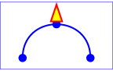 At three seconds |
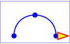 At six seconds |
View this example as SVG (SVG-enabled browsers only)
The following table shows the supplemental transformation matrices that are applied to achieve the effect of the motion path animation.
| After 0s | After 3s | After 6s | |
|---|---|---|---|
| Supplemental transform due to movement along motion path | translate(100,250) | translate(250,100) | translate(400,250) |
| Supplemental transform due to rotate="auto" | rotate(-90) | rotate(0) | rotate(90) |
For a list of elements that can be animated using the 'animateMotion' element, see Elements, attributes and properties that can be animated.
The 'animateColor' element specifies a color transformation over time.
Except for any SVG-specific rules explicitly mentioned in this specification, the normative definition for this element is the SMIL Animation specification. In particular, see SMIL Animation: 'animateColor' element ([SMILANIM], section 4.4).
The 'from', 'by' and 'to' attributes take color values, where each color value is expressed using the following syntax (the same syntax as used in SVG's properties that can take color values):
<color> <icccolor>?
The 'values' attribute for the 'animateColor' element consists of a semicolon-separated list of color values, with each color value expressed in the above syntax.
Out of range color values can be provided, but user agent processing will be implementation dependent. User agents should clamp color values to allow color range values as late as possible, but note that system differences might preclude consistent behavior across different systems.
The 'color-interpolation' property applies to color interpolations that result from 'animateColor' animations.
The use of 'animateColor' is deprecated, since all of its functionality can be achieved simply by using 'animate' to target properties that can take color values. The 'animateColor' element may be dropped from a future version of the SVG specification.
For a list of attributes and properties that can be animated using the 'animateColor' element, see Elements, attributes and properties that can be animated.
The 'animateTransform' element animates a transformation attribute on a target element, thereby allowing animations to control translation, scaling, rotation and/or skewing.
This section should talk about the 'transform' property.
Attribute definitions:
| Name | Value | Lacuna value | Animatable |
|---|---|---|---|
| type | translate | scale | rotate | skewX | skewY | translate | no |
Indicates the type of transformation which is to have its values change over time.
The 'from', 'by' and 'to' attributes take a value expressed using the same syntax that is available for the given transformation type:
(See The 'transform' property.)
The 'values' attribute for the 'animateTransform' element consists of a semicolon-separated list of values, where each individual value is expressed as described above for 'from', 'by' and 'to'.
The animation effect for 'animateTransform' is post-multiplied to the underlying value for additive 'animateTransform' animations (see below) instead of added to the underlying value, due to the specific behavior of 'animateTransform'.
From-to, from-by and by animations are defined in SMIL to be equivalent to a corresponding values animation. See the Animation function values section of SMIL Animation ([SMILANIM], section 3.2.2). However, to animations are a mixture of additive and non-additive behavior, as described in the How from, to and by attributes affect additive behavior section of SMIL Animation ([SMILANIM], section 3.3.6). To animations provide specific functionality to get a smooth change from the underlying value to the 'to' attribute value, which conflicts mathematically with the requirement for additive transform animations to be post-multiplied. As a consequence, in SVG 1.1 the behavior of to animations for 'animateTransform' is undefined. Authors are suggested to use from-to, from-by, by or values animations to achieve any desired transform animation.
If 'calcMode' has the value 'paced', then the "distance" for the transformation is calculated as further described in Paced animations and complex types.
When an animation is active, the effect of non-additive 'animateTransform' (i.e., additive="replace") is to replace the given attribute's value with the transformation defined by the 'animateTransform'. The effect of additive (i.e., additive="sum") is to post-multiply the transformation matrix corresponding to the transformation defined by this 'animateTransform'.
To illustrate:
]]>
In the code snippet above, because the both animations have additive="replace", the first animation overrides the transformation on the rectangle itself and the second animation overrides the transformation from the first animation; therefore, at time 5 seconds, the visual result of the above two animations would be equivalent to the following static rectangle:
]]>
]]>
In this code snippet, because the both animations have additive="sum", the first animation post-multiplies its transformation to any transformations on the rectangle itself and the second animation post-multiplies its transformation to any transformation from the first animation; therefore, at time 5 seconds, the visual result of the above two animations would be equivalent to the following static rectangle:
]]>
The zero value used when performing a by animation with type="scale" is indeed 0. Thus, performing the following animation causes the rectangle to be invisible at time 0s (since the animated transform list value is 'scale(0)'), and be scaled back to its original size at time 5s (since the animated transform list value is 'scale(1)'):
]]>
When a transform animation has accumulate='sum', the accumulation that occurs for each completed repetition of the animation is computed on the values specified in the 'animateTransform' element's animation value attributes (i.e., 'values', 'from', 'to' and 'by') and not on the transformation matrix that these values represent.
For example, in the following code snippet, 3 is added to the scale value at the start of each repetition:
]]>
The following graph and table shows the animated 'transform' value on the 'rect' over the course of the animation:
 |
|
Transform item types that can have multiple values – 'translate', 'scale' and 'rotate' – are treated as vectors and accumulation is performed with vector addition. Optional values that are omitted are taken to have their usual implied value: 1 for the <sy> component of a 'scale' and 0 for the <tx> component of a 'translate' and the <cx cy> components of a 'rotate'.
For example, consider the following code snippet, which has a cumulative transform animation of type 'rotate':
]]>
At time 1 second, the animated value of 'transform' on the 'rect' will jump from 'rotate(10 30 40)' to 'rotate(10 60 80)', because the effect of the accumulation is to take the value at the end of the first repetition, '10 30 40', and add to it the value at simple duration t = 0s, which is '0 30 40'.
For a list of attributes and properties that can be animated using the 'animateTransform' element, see Elements, attributes and properties that can be animated.
The following lists all of the elements which can be animated by an 'animateMotion' element:
Each attribute or property within this specification indicates whether or not it can be animated by SVG's animation elements. Animatable attributes and properties are designated as follows:
Animatable: yes.
whereas attributes and properties that cannot be animated are designated:
Animatable: no.
Some properties are defined as being animatable but only for non-additive animations:
Animatable: yes (non-additive).
SVG has a defined set of basic data types for its various supported attributes and properties. For those attributes and properties that can be animated, the following table indicates which animation elements can be used to animate each of the basic data types. If a given attribute or property can take values of keywords (which are not additive) or numeric values (which are additive), then additive animations are possible if the subsequent animation uses a numeric value even if the base animation uses a keyword value; however, if the subsequent animation uses a keyword value, additive animation is not possible.
| Data type | Additive? | 'animate' | 'set' | 'animateColor' | 'animateTransform' | Notes |
|---|---|---|---|---|---|---|
| <angle> | yes | yes | yes | no | no | |
| <color> | yes | yes | yes | yes | no | Only additive if each value can be converted to an RGB color. |
| <frequency> | no | no | no | no | no | |
| <integer> | yes | yes | yes | no | no | |
| <length> | yes | yes | yes | no | no | |
| <list-of-Ts> | no | yes | yes | no | no | |
| <number> | yes | yes | yes | no | no | |
| <paint> | yes | yes | yes | yes | no | Only additive if each value can be converted to an RGB color. |
| <percentage> | yes | yes | yes | no | no | |
| <time> | no | no | no | no | no | |
| <iri> | no | yes | yes | no | no | |
| All other data types used in animatable attributes and properties | no | yes | yes | no | no |
Any deviation from the above table or other special note about the animation capabilities of a particular attribute or property is included in the section of the specification where the given attribute or property is defined.
Example dom01 shows a simple animation using the DOM.
]]>
 At zero seconds |
 At 2.5 seconds |
 At five seconds |
View this example as SVG (SVG-enabled browsers only)
The above SVG file contains a single graphics element, a text string that says "SVG". The animation loops for 5 seconds. The text string starts out small and transparent and grows to be large and opaque. Here is an explanation of how this example works:
StartAnimation.StartAnimation()
function is only called once to give a value to global
variable text_element and to make the initial
call to ShowAndGrowElement().
ShowAndGrowElement() is called every 50
milliseconds and resets the 'transform' and
'style attribute' attributes on the text element to new
values each time it is called. At the end of
ShowAndGrowElement, the function tells the
ECMAScript engine to call itself again after 50 more
milliseconds.If scripts are modifying the same attributes or properties that are being animated by SVG's animation elements, the scripts modify the base value for the animation. If a base value is modified while an animation element is animating the corresponding attribute or property, the animations are required to adjust dynamically to the new base value.
If a script is modifying a property on the override style sheet at the same time that an animation element is animating that property, the result is implementation-dependent; thus, it is recommended that this be avoided.
Below are the DOM interfaces for the elements defined in this chapter. In addition, TimeEvent, which is from SMIL Animation, is included here for easy reference.
The TimeEvent interface, defined in SMIL Animation: Supported interfaces, provides specific contextual information associated with Time events.
The different types of events that can occur are:
interface TimeEvent : Event {
readonly attribute AbstractView view;
readonly attribute long detail;
void initTimeEvent(DOMString typeArg, AbstractView viewArg, long detailArg);
};document.createEvent(). This
method may only be called before the TimeEvent has been dispatched
via the dispatchEvent method, though it may be called multiple times
during that phase if necessary. If called multiple times, the final
invocation takes precedence.
The SVGAnimationElement interface is the base interface for all of the animation element interfaces: SVGAnimateElement, SVGSetElement, SVGAnimateColorElement, SVGAnimateMotionElement and SVGAnimateTransformElement.
Unlike other SVG DOM interfaces, the SVG DOM does not specify
convenience DOM properties corresponding to the various language
attributes on SVG's animation elements. Specification of these
convenience properties in a way that will be compatible with future
versions of SMIL Animation is expected in a future version of SVG. The
current method for accessing and modifying the attributes on the
animation elements is to use the standard getAttribute,
setAttribute, getAttributeNS and
setAttributeNS defined in
DOM4
[DOM4].
SMIL Animation supports several methods for controlling the behavior of
animation: beginElement(), beginElementAt(),
endElement() and endElementAt(). These methods
are used to begin and end the active duration of an element. Authors can
(but are not required to) declare the timing to respond to the DOM using
the following syntax:
<animate begin="indefinite" end="indefinite" .../>
If a DOM method call is made to begin or end the element (using
beginElement(), beginElementAt(),
endElement() or endElementAt()), each method call
creates a single instance time (in the appropriate instance times list).
These times are then interpreted as part of the semantics of lists of
times, as described in
Evaluation of begin and end time lists.
beginElement() or
endElement() call is the current presentation time at the
time of the DOM method call.beginElementAt() or
endElementAt() call is the current presentation time at the
time of the DOM method call, plus or minus the specified offset.beginElement() is subject to the 'animate/restart'
attribute in the same manner that event-based begin timing is. Refer
also to SMIL Animation: Restarting animation
([SMILANIM], section 3.3.7).interface SVGAnimationElement : SVGElement {
readonly attribute SVGElement targetElement;
float getStartTime();
float getCurrentTime();
float getSimpleDuration();
void beginElement();
void beginElementAt(float offset);
void endElement();
void endElementAt(float offset);
};
SVGAnimationElement implements SVGTests;
beginElementAt(0).
endElementAt(0).
The SVGAnimateElement interface corresponds to the 'animate' element.
Object-oriented access to the attributes of the 'animate' element via the SVG DOM is not available.
interface SVGAnimateElement : SVGAnimationElement {
};
The SVGSetElement interface corresponds to the 'set' element.
Object-oriented access to the attributes of the 'set' element via the SVG DOM is not available.
interface SVGSetElement : SVGAnimationElement {
};
The SVGAnimateMotionElement interface corresponds to the 'animateMotion' element.
Object-oriented access to the attributes of the 'animateMotion' element via the SVG DOM is not available.
interface SVGAnimateMotionElement : SVGAnimationElement {
};
The SVGMPathElement interface corresponds to the 'mpath' element.
interface SVGMPathElement : SVGElement {
};
SVGMPathElement implements SVGURIReference;
The SVGAnimateColorElement interface corresponds to the 'animateColor' element.
Object-oriented access to the attributes of the 'animateColor' element via the SVG DOM is not available.
interface SVGAnimateColorElement : SVGAnimationElement {
};
The SVGAnimateTransformElement interface corresponds to the 'animateTransform' element.
Object-oriented access to the attributes of the 'animateTransform' element via the SVG DOM is not available.
interface SVGAnimateTransformElement : SVGAnimationElement {
};
{kind=link}
{kind=link}
{kind=link}